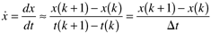

| [ Team LiB ] |
|
2.6 Form of Dynamic ModelsThe dynamic models derived in this chapter consist of a set of first-order (only first derivatives with respect to time), nonlinear, explicit, initial-value, ordinary differential equations. A representation of a set of first-order differential equations is where xi is a state variable, ui is an input variable, and pi is a parameter. The notation is used to represent dxi/dt. Notice that there are nx equations, nx state variables, nu inputs, and np parameters. Also included in these models is a set of algebraic equations, relating states, inputs, and parameters to output variables. State VariablesA state variable is a variable that arises naturally in the accumulation term of a dynamic material or energy balance. A state variable is a measurable (at least conceptually) quantity that indicates the state of a system. For example, temperature is the common state variable that arises from a dynamic energy balance. Concentration is a state variable that arises when dynamic component balances are written. Input VariablesAn input variable is a variable that normally must be specified before a problem can be solved or a process can be operated. Inputs are normally specified by an engineer, based on knowledge of the process being considered. Input variables typically include flow rates of streams entering or leaving a process (notice that the flow rate of an outlet stream might be considered an input variable!). Compositions or temperatures of streams entering a process are also typical input variables. Input variables are often manipulated (by process controllers) in order to achieve desired performance. ParametersA parameter is typically a physical or chemical property value that must be specified or known to mathematically solve a problem. Parameters are often fixed by nature, that is, the reaction chemistry, molecular structure, existing vessel configuration, operation, and so forth. Examples include density, viscosity, thermal conductivity, heat transfer coefficient, and mass-transfer coefficient. When designing a process, a parameter might be "adjusted" to achieve some desired performance. For example, reactor volume may be an important design parameter. Output VariablesAn output variable is often a state variable that is measured, particularly for control purposes. Very often the measured outputs are simply a subset of the state variables. Other times the outputs are a nonlinear function of the states (or even inputs). Vector NotationThe set of differential and algebraic Equations (2.63) and (2.64) can be written more compactly in vector form. where x is the vector of state variables, u the vector of input variables, p the vector of parameters, and y the vector of output variables. Steady-State SolutionsNotice that dynamic models (2.63) can also be used to solve steady-state problems, since That is, for steady-state processes, resulting in a set of algebraic equations. In this case, all inputs and parameters would be specified, leaving the nx state values to be solved for; that is, nx equations in nx unknowns must be solved. The focus of this text is not on the development of numerical methods, so we briefly cover the basic idea in Appendix 2.1. Note that differential equation solvers can also be used to solve for the steady state of stable systems, by simply integrating from an initial value for the states for a long period of time, until a steady state is reached. Numerical IntegrationHere we briefly consider numerical methods to integrate ordinary differential equations. if the derivative term is approximated (where k represents a time index) as  The explicit Euler integration technique involves specifying the integration step size, Dt, and marching sequentially from one time step to another. This approach is illustrated in Appendix 2.2. In practice, more accurate integration routines using a variable step size are used. For more details on how to use MATLAB integration routines, see Module 3. |
| [ Team LiB ] |
|